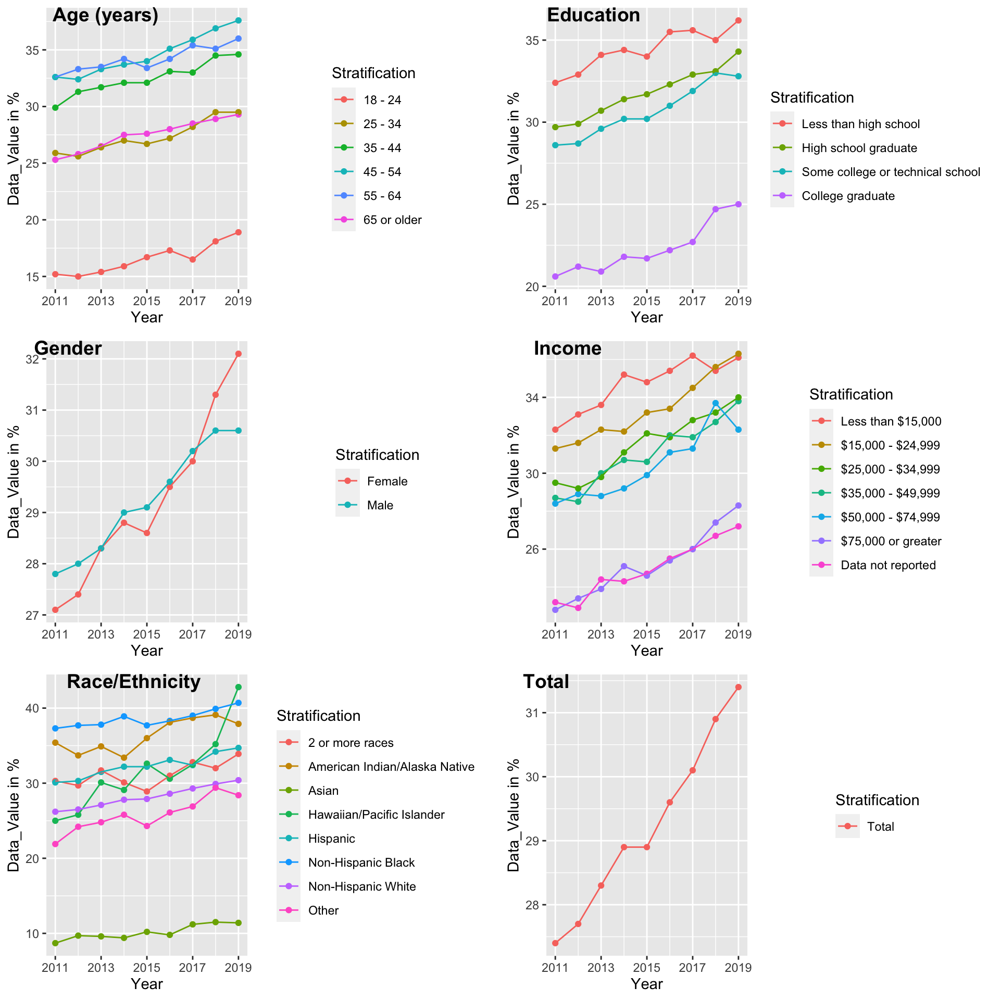
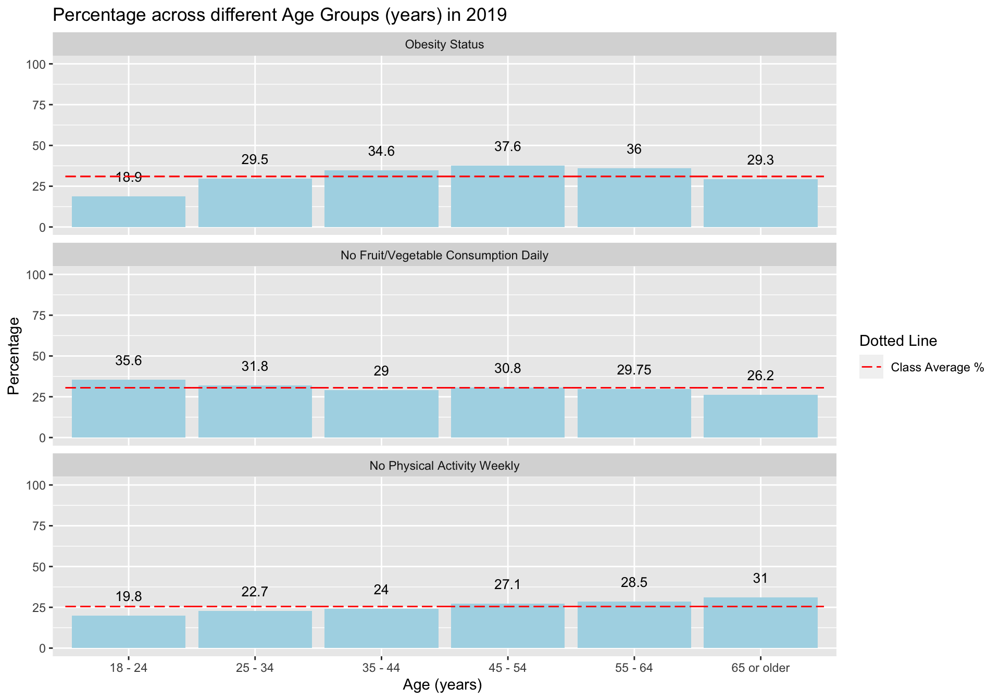
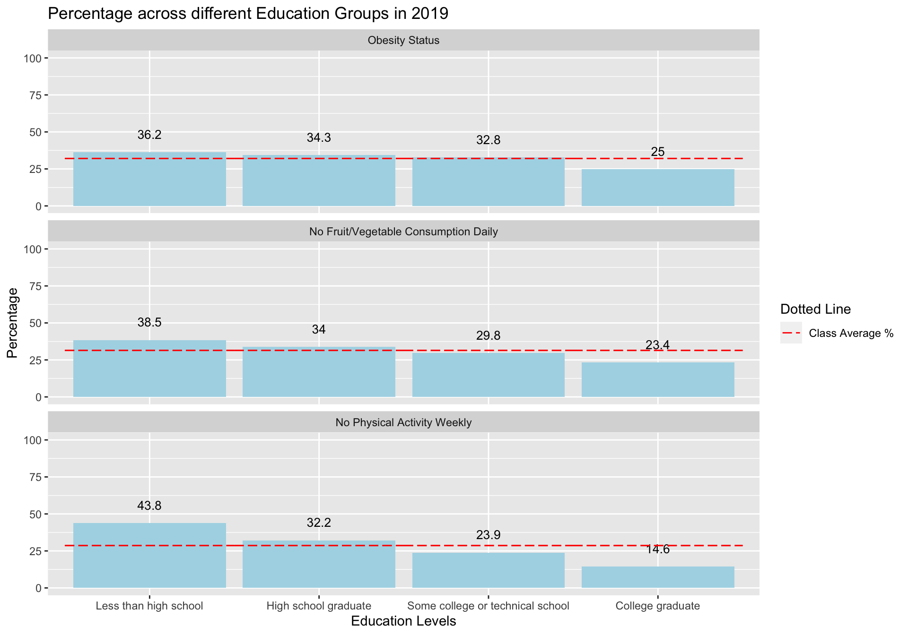
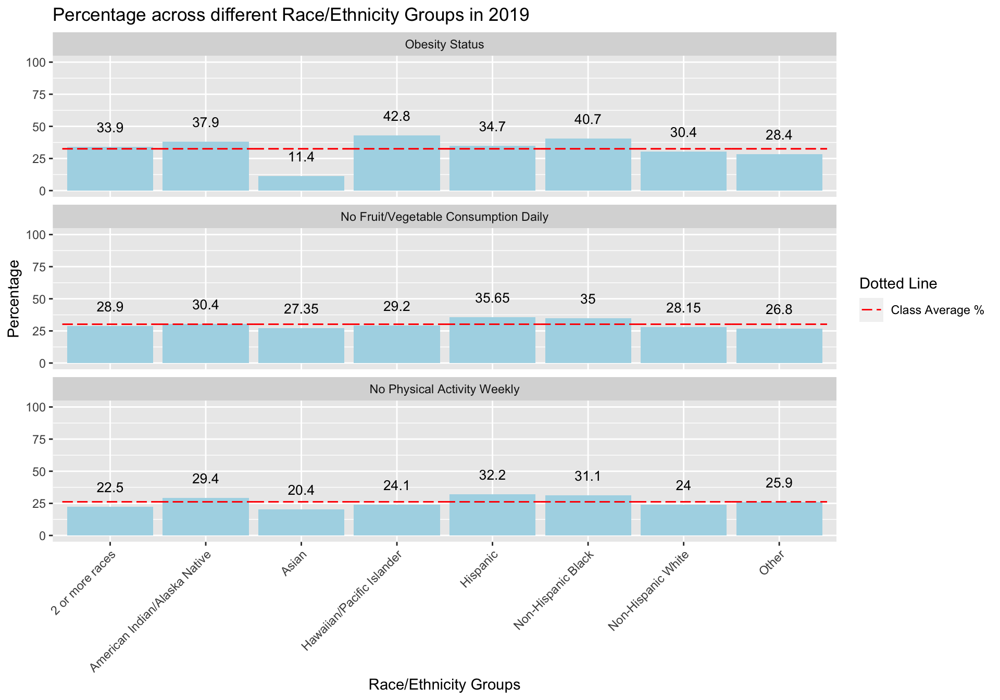
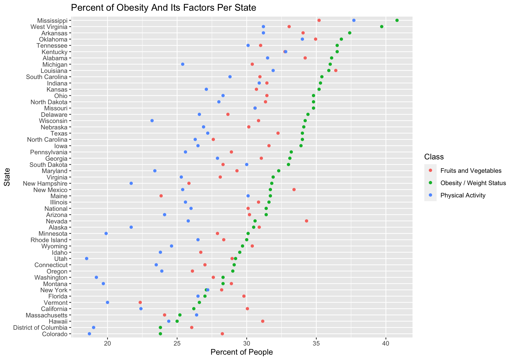
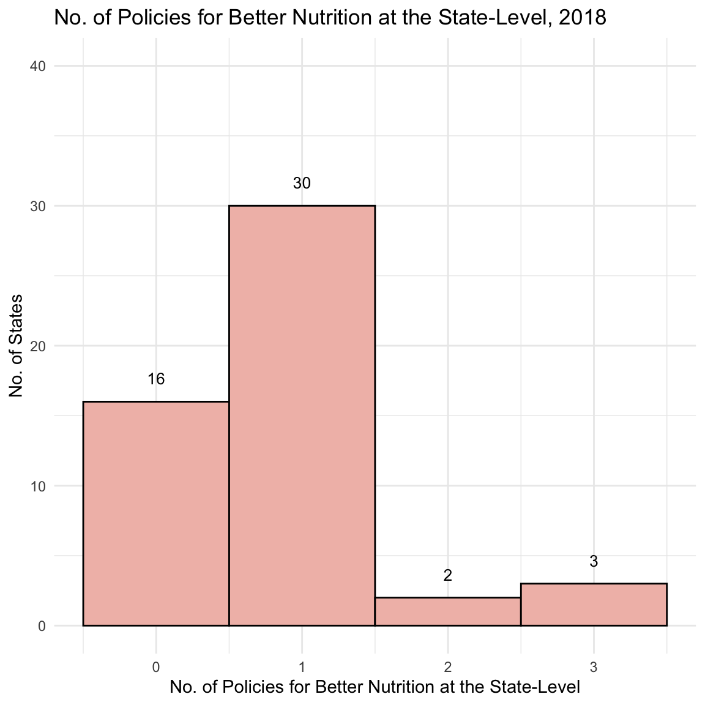
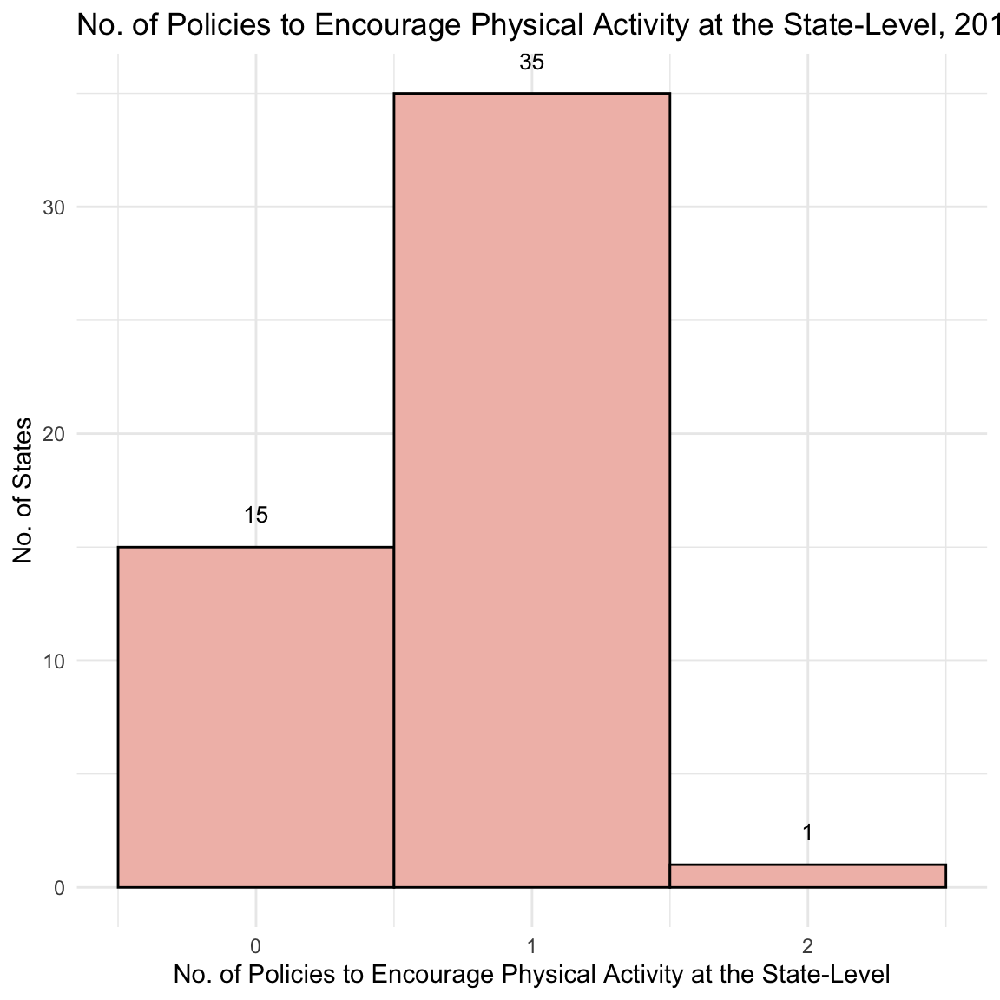
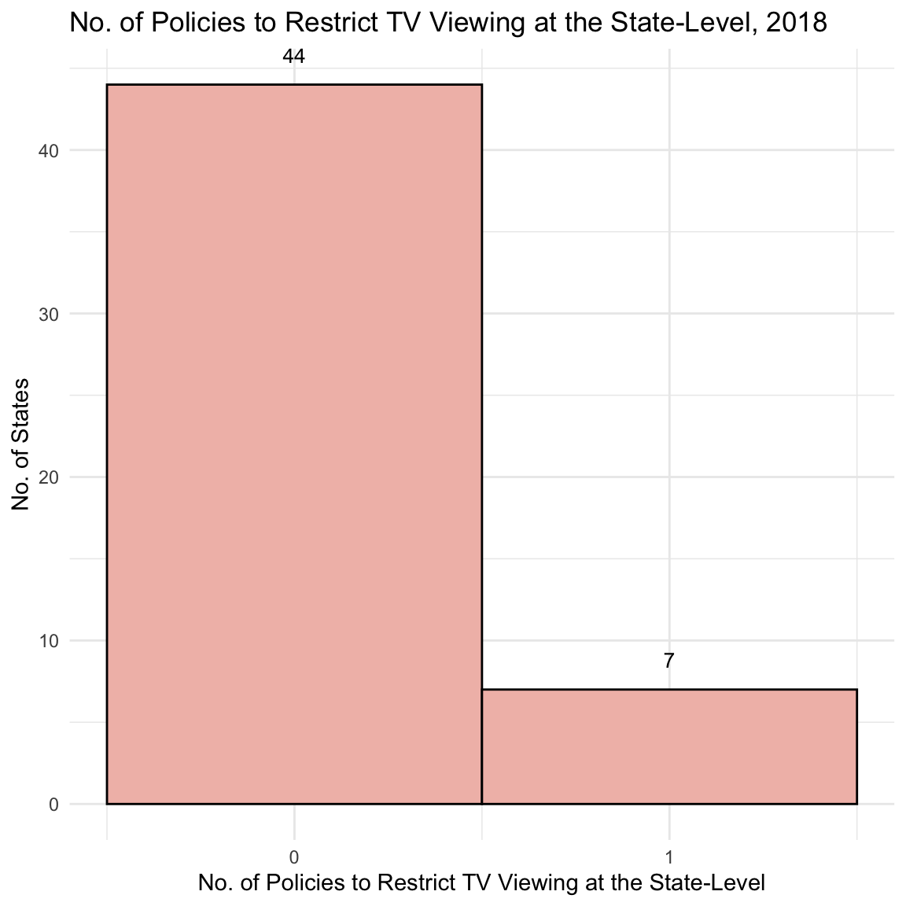
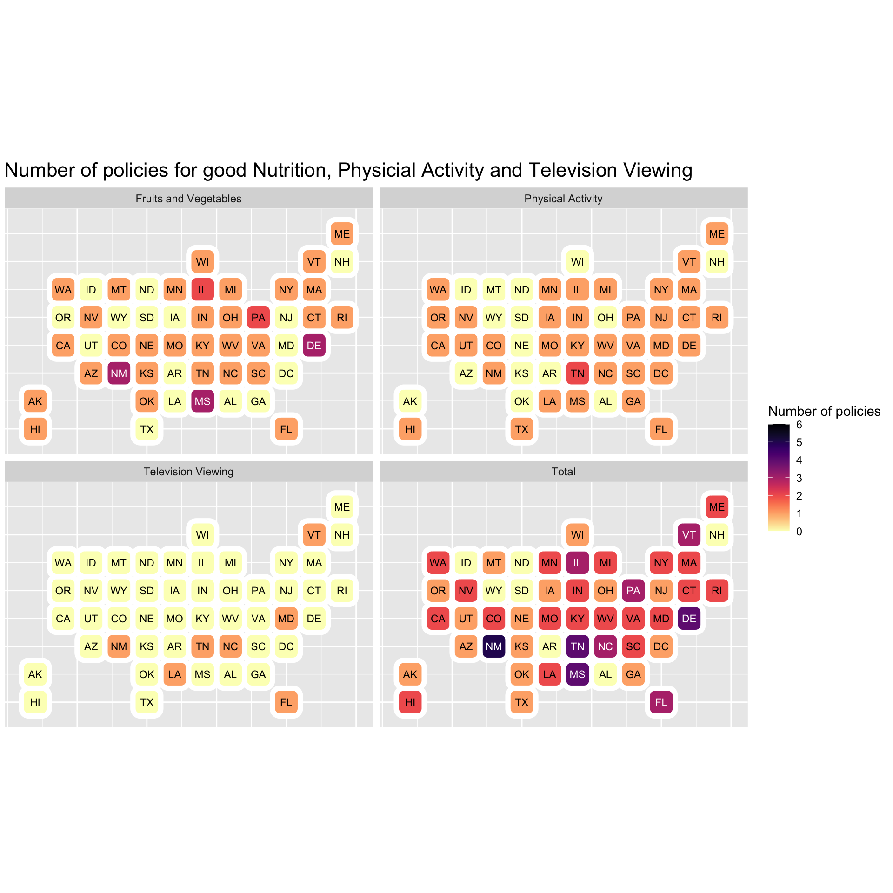
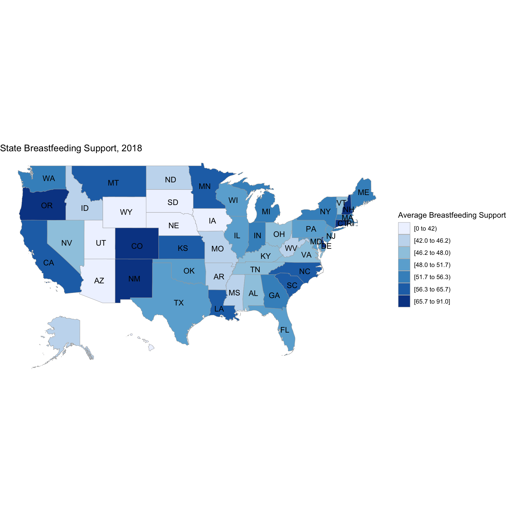

Chapter 5 Results
5.1 Dataset 1 Obesity-Behavioral
In this dataset, we have data from 2011-2019. This data was utilised to form a time-series graph showing the trends of Obesity Rates over the last decade, in different StratificationCategories and also SubCategories.

For each of the Stratification Categories, we can observe a clear upwards trend i.e. as the years have gone by, the obesity rates have increased. The “Total” plot summarises this trend across all Stratification Categories.
With the “Age(years)”, “Education”, “Income” and “Race/Ethnicity” Categories, we can see a visible difference in obesity rates of some sub-groups within them (lines located at the bottom part of the graph, ex: College graduates have much lower obesity rates than less educated adults), over the others. In our analysis below, we continue to look deeper into these groups.

We can see that middle bars are highest. For lower age group obesity is least - although fruit/vegetable consumption is low, physical activity is higher. As age increases, as expected, the physical activity is the least, although overall nutrition and obesity status are better than middle groups.

We observe an overall decreasing trend. Population belonging to higher income levels are found to be more physically active, eat more nutritious food, and also have better obesity status than lower income groups.

An overall decreasing trend is apparent. As education level increases, there is more physical activity taking place, more nutritious food being consumed, and more people with higher educationals levels are seen to have a better obesity status.

For Asians, the obesity status is the least. The levels of “Lack of Physical Activity” and “Lack of Consumption of Fruits and Vegetables” are not that much higher for Hawaiian/Pacific Island people even though their obesity status is the highest. This could be due to genetic or other factors, not captured in the available datasets. For the sub-categories of 2 or more races, American Indian/Alaska Native, Non-Hispanic Black, we see that they have less nutrition and physical activity than others, and also high obesity status.
Until now, we were looking at Total data across the US states. Now let’s look at the data at the state-level and see if we spot any distinctive patterns.
We can clearly see that there exists a chain of Southern states, starting from Oklahoma to West Virginia, with the highest Percentage of Obese Adults among all states. Now, let us try to dig deeper into the data for these states - let us look at how they fare in terms of Physical Activity and Nutrition, and if we can find an association with their corresponding Obesity Rates.
 The first thing we can notice that the overall trend for “Lack of Physical Activity” and “Lack of Consumption of Fruits and Vegetables” mirrors the overall trend of Obesity / Weight Status, especially for the upper half the graph which represents states with the Highest obesity percentages in the US.
Combining our findings from the previous geo-plot, we find that the Southern States that showed up as having highest obesity rates also seem to be doing worse than other states in terms of Physical Activity and Nutrition - their rates of the Lack of Physical Activty and the Lack of Fruit/Vegetable Consumption are higher than other states.
From this dataset, our broad conclusions are: 1. Overall increasing trend of Obesity regardless of Stratification Category, over the past decade 2. Some sub-groups within each Stratification Category are doing better with their Obesity Status than others. In most cases, this is correlated with their lower rates of Lack of Physical Activty and Nutrition Intake. 3. Southern states in the US have the highest Obesity Rates. This seems to be closely associated with their higher rates of Lack of Physical Activity and Nutrition Intake.
5.2 Dataset 2 Obesity-Policy-Support
 Majority of the states (30) containing exactly 1 Policy Encouraging Better Nutrition in that state. Only 5 out of 41 states contained >=2 policies supporting better nutrition.
In the States that do have Food Policy Councils, most of them seem to have quite a low number - four or less.
 Most states have exacty 1 Policy that Encourages Physical Activity. Around one-third of the states have no policy at all.
 Very few states have any policy regarding Restricting Television Viewing (7). All the other states have no such policies.

From the histograms, we observed the distribution of number of policies at the state-level. From this geo-plot, we can see exactly which state has how many policies supporting each of the Classes - Nutrition, Physical Activity and Television Viewing.
From the right-bottom graph, which sums up total number of policies from all three Classes per state, we observe that it is mostly Southern states like New Mexico, Tennessee, Mississippi, North Carolina etc. Therefore, we would expect these states to do better than others in terms of their Obesity rates.

We also had data regarding Breastfeeding Support in terms of the “Maternity Practices in Infant Nutrition and Care (mPINC)” score as well as the Percent of live births occurring at facilities designated as “baby friendly” by the Baby Friendly Hospital Initiative (BFHI). Since the mPINC score is also out of 100, we took an average of these scores per state to plot this graph.
We do not observe a particular region in the US to be doing significantly better than others in providing Policy Support For BreastFeeding.
From this dataset, our broad conclusions are: 1. States have most number of policies encouraging Good Nutrition Intake, followed by Physical Activity and lastly Television Viewing, which is hardly restricted in the US. 2. Breastfeeding Policy Support Data across states does not seem to follow a discernable pattern in terms of more or less support in a particular US region.